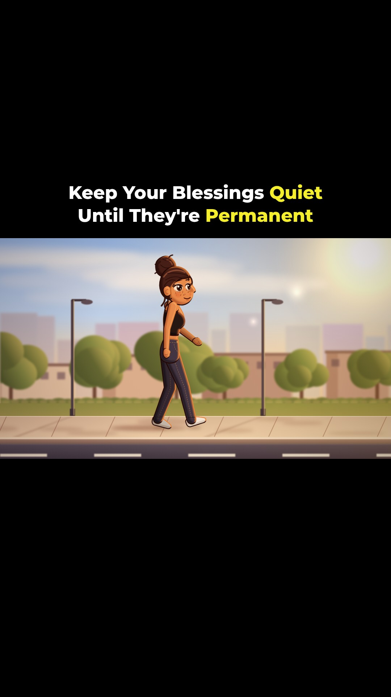
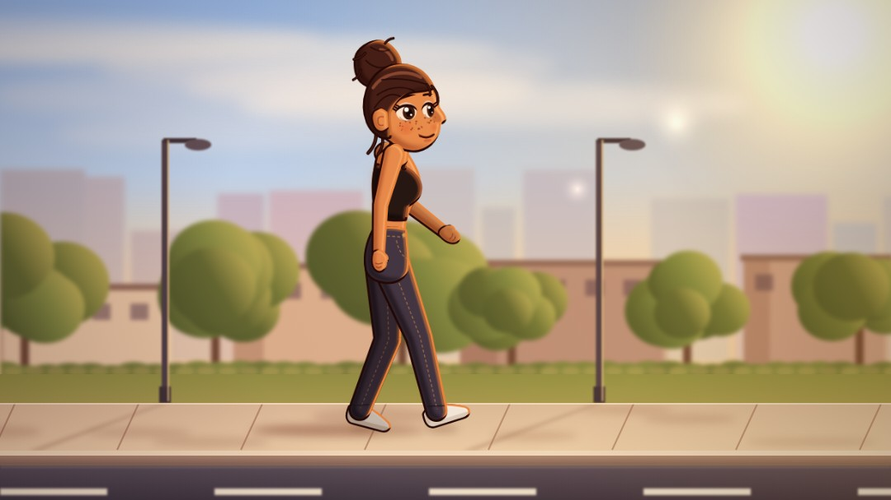
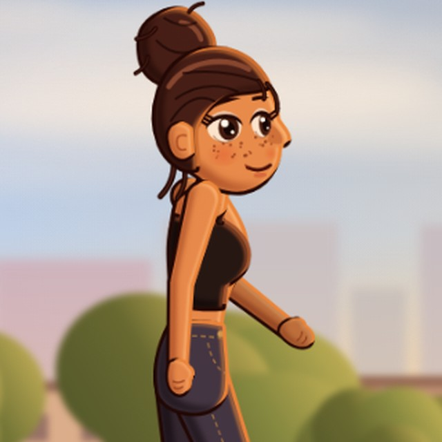
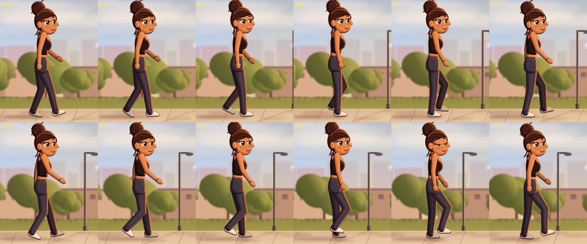

The woman from the reel, rebuilt in code in the reel's style, walking along a footpath at golden hour. These frames come from the real scene code, not sketches.




| Time | What happens | How it moves |
|---|---|---|
| 0.0 – 8.0 | She walks left to right on the footpath, relaxed and smiling, eyes forward | 7 walk cycles (1.14 s each, 105 steps/min). Body bob on each heel strike, opposite arm swing, slight head nod |
| continuous | The world slides past: slabs and road dashes, lamp posts, trees and buildings, far skyline | Camera tracks her. Parallax: road 1.15×, path 1×, lamp posts 0.8×, trees 0.42×, skyline 0.08× |
| continuous | Small life: loose strands and the bun swing with her steps; blinks at seeded times (about every 2–3 s) | Hair lags the head; blinks take 0.16 s |
| static | Low sun at the top right with a soft flare, long lamp-post shadows, dappled tree shade on the path | Lighting stays fixed while the shadows scroll with the ground |